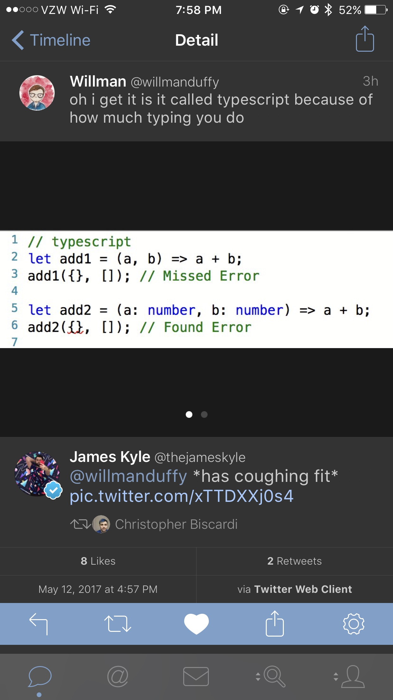
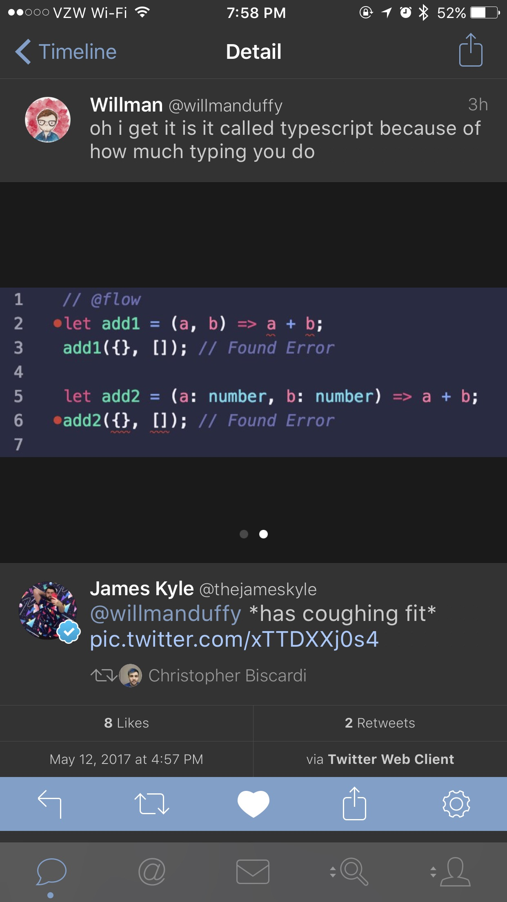
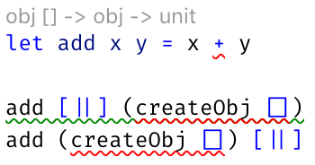
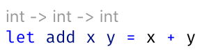

val simpleApp : obj
Full name: fsharpstackofhappiness.simpleApp
Full name: fsharpstackofhappiness.simpleApp
val betterApp : obj
Full name: fsharpstackofhappiness.betterApp
Full name: fsharpstackofhappiness.betterApp
type WebPart = obj -> obj
Full name: fsharpstackofhappiness.WebPart
Full name: fsharpstackofhappiness.WebPart
Multiple items
type Async
static member AsBeginEnd : computation:('Arg -> Async<'T>) -> ('Arg * AsyncCallback * obj -> IAsyncResult) * (IAsyncResult -> 'T) * (IAsyncResult -> unit)
static member AwaitEvent : event:IEvent<'Del,'T> * ?cancelAction:(unit -> unit) -> Async<'T> (requires delegate and 'Del :> Delegate)
static member AwaitIAsyncResult : iar:IAsyncResult * ?millisecondsTimeout:int -> Async<bool>
static member AwaitTask : task:Task -> Async<unit>
static member AwaitTask : task:Task<'T> -> Async<'T>
static member AwaitWaitHandle : waitHandle:WaitHandle * ?millisecondsTimeout:int -> Async<bool>
static member CancelDefaultToken : unit -> unit
static member Catch : computation:Async<'T> -> Async<Choice<'T,exn>>
static member Choice : computations:seq<Async<'T option>> -> Async<'T option>
static member FromBeginEnd : beginAction:(AsyncCallback * obj -> IAsyncResult) * endAction:(IAsyncResult -> 'T) * ?cancelAction:(unit -> unit) -> Async<'T>
static member FromBeginEnd : arg:'Arg1 * beginAction:('Arg1 * AsyncCallback * obj -> IAsyncResult) * endAction:(IAsyncResult -> 'T) * ?cancelAction:(unit -> unit) -> Async<'T>
static member FromBeginEnd : arg1:'Arg1 * arg2:'Arg2 * beginAction:('Arg1 * 'Arg2 * AsyncCallback * obj -> IAsyncResult) * endAction:(IAsyncResult -> 'T) * ?cancelAction:(unit -> unit) -> Async<'T>
static member FromBeginEnd : arg1:'Arg1 * arg2:'Arg2 * arg3:'Arg3 * beginAction:('Arg1 * 'Arg2 * 'Arg3 * AsyncCallback * obj -> IAsyncResult) * endAction:(IAsyncResult -> 'T) * ?cancelAction:(unit -> unit) -> Async<'T>
static member FromContinuations : callback:(('T -> unit) * (exn -> unit) * (OperationCanceledException -> unit) -> unit) -> Async<'T>
static member Ignore : computation:Async<'T> -> Async<unit>
static member OnCancel : interruption:(unit -> unit) -> Async<IDisposable>
static member Parallel : computations:seq<Async<'T>> -> Async<'T []>
static member RunSynchronously : computation:Async<'T> * ?timeout:int * ?cancellationToken:CancellationToken -> 'T
static member Sleep : millisecondsDueTime:int -> Async<unit>
static member Start : computation:Async<unit> * ?cancellationToken:CancellationToken -> unit
static member StartAsTask : computation:Async<'T> * ?taskCreationOptions:TaskCreationOptions * ?cancellationToken:CancellationToken -> Task<'T>
static member StartChild : computation:Async<'T> * ?millisecondsTimeout:int -> Async<Async<'T>>
static member StartChildAsTask : computation:Async<'T> * ?taskCreationOptions:TaskCreationOptions -> Async<Task<'T>>
static member StartImmediate : computation:Async<unit> * ?cancellationToken:CancellationToken -> unit
static member StartWithContinuations : computation:Async<'T> * continuation:('T -> unit) * exceptionContinuation:(exn -> unit) * cancellationContinuation:(OperationCanceledException -> unit) * ?cancellationToken:CancellationToken -> unit
static member SwitchToContext : syncContext:SynchronizationContext -> Async<unit>
static member SwitchToNewThread : unit -> Async<unit>
static member SwitchToThreadPool : unit -> Async<unit>
static member TryCancelled : computation:Async<'T> * compensation:(OperationCanceledException -> unit) -> Async<'T>
static member CancellationToken : Async<CancellationToken>
static member DefaultCancellationToken : CancellationToken
Full name: Microsoft.FSharp.Control.Async
--------------------
type Async<'T>
Full name: Microsoft.FSharp.Control.Async<_>
type Async
static member AsBeginEnd : computation:('Arg -> Async<'T>) -> ('Arg * AsyncCallback * obj -> IAsyncResult) * (IAsyncResult -> 'T) * (IAsyncResult -> unit)
static member AwaitEvent : event:IEvent<'Del,'T> * ?cancelAction:(unit -> unit) -> Async<'T> (requires delegate and 'Del :> Delegate)
static member AwaitIAsyncResult : iar:IAsyncResult * ?millisecondsTimeout:int -> Async<bool>
static member AwaitTask : task:Task -> Async<unit>
static member AwaitTask : task:Task<'T> -> Async<'T>
static member AwaitWaitHandle : waitHandle:WaitHandle * ?millisecondsTimeout:int -> Async<bool>
static member CancelDefaultToken : unit -> unit
static member Catch : computation:Async<'T> -> Async<Choice<'T,exn>>
static member Choice : computations:seq<Async<'T option>> -> Async<'T option>
static member FromBeginEnd : beginAction:(AsyncCallback * obj -> IAsyncResult) * endAction:(IAsyncResult -> 'T) * ?cancelAction:(unit -> unit) -> Async<'T>
static member FromBeginEnd : arg:'Arg1 * beginAction:('Arg1 * AsyncCallback * obj -> IAsyncResult) * endAction:(IAsyncResult -> 'T) * ?cancelAction:(unit -> unit) -> Async<'T>
static member FromBeginEnd : arg1:'Arg1 * arg2:'Arg2 * beginAction:('Arg1 * 'Arg2 * AsyncCallback * obj -> IAsyncResult) * endAction:(IAsyncResult -> 'T) * ?cancelAction:(unit -> unit) -> Async<'T>
static member FromBeginEnd : arg1:'Arg1 * arg2:'Arg2 * arg3:'Arg3 * beginAction:('Arg1 * 'Arg2 * 'Arg3 * AsyncCallback * obj -> IAsyncResult) * endAction:(IAsyncResult -> 'T) * ?cancelAction:(unit -> unit) -> Async<'T>
static member FromContinuations : callback:(('T -> unit) * (exn -> unit) * (OperationCanceledException -> unit) -> unit) -> Async<'T>
static member Ignore : computation:Async<'T> -> Async<unit>
static member OnCancel : interruption:(unit -> unit) -> Async<IDisposable>
static member Parallel : computations:seq<Async<'T>> -> Async<'T []>
static member RunSynchronously : computation:Async<'T> * ?timeout:int * ?cancellationToken:CancellationToken -> 'T
static member Sleep : millisecondsDueTime:int -> Async<unit>
static member Start : computation:Async<unit> * ?cancellationToken:CancellationToken -> unit
static member StartAsTask : computation:Async<'T> * ?taskCreationOptions:TaskCreationOptions * ?cancellationToken:CancellationToken -> Task<'T>
static member StartChild : computation:Async<'T> * ?millisecondsTimeout:int -> Async<Async<'T>>
static member StartChildAsTask : computation:Async<'T> * ?taskCreationOptions:TaskCreationOptions -> Async<Task<'T>>
static member StartImmediate : computation:Async<unit> * ?cancellationToken:CancellationToken -> unit
static member StartWithContinuations : computation:Async<'T> * continuation:('T -> unit) * exceptionContinuation:(exn -> unit) * cancellationContinuation:(OperationCanceledException -> unit) * ?cancellationToken:CancellationToken -> unit
static member SwitchToContext : syncContext:SynchronizationContext -> Async<unit>
static member SwitchToNewThread : unit -> Async<unit>
static member SwitchToThreadPool : unit -> Async<unit>
static member TryCancelled : computation:Async<'T> * compensation:(OperationCanceledException -> unit) -> Async<'T>
static member CancellationToken : Async<CancellationToken>
static member DefaultCancellationToken : CancellationToken
Full name: Microsoft.FSharp.Control.Async
--------------------
type Async<'T>
Full name: Microsoft.FSharp.Control.Async<_>
type 'T option = Option<'T>
Full name: Microsoft.FSharp.Core.option<_>
Full name: Microsoft.FSharp.Core.option<_>
Being Productive with the F# Stack of Happiness
Featuring Suave, Fable, FAKES, and Paket

Presented by Jeremy Abbott
Hi
- I'm Jeremy 🖖🏼
- Twitter: @mrjabbott
- Email: jeremymabbott@gmail.com
- Blog: jeremyabbott.github.io
About Me
- .NET developer for 11 years
- Functional programming hobbyist
- Trying to spread the word of F# in my small way
The Slides
- Slides
- Created using FsReveal
Resources
-
Code
- Suave: https://suave.io
- Fable: http://fable.io
- Elmish: https://fable-elmish.github.io/elmish/
- Paket: https://fsprojects.github.io/Paket/
- FAKE: https://fake.build
- Stacks
The F# Stack of Happiness
The F# Stack of Happiness
- Full F# stack with hot reloading on both the client and the server 🥞
- Makes use of Suave for the back-end on .NET Core 🎩
- Makes use of Fable for front-end clients web or mobile 🐉
- FAKE for builds 🛠
- Paket for .NET dependencies 📦
- Shared code between server and client 👏🏼
- All OSS
- F# everywhere ❤️
Why?
-
Moar F#
- Pattern matching
- Algebraic data types
- Default immutability
-
Less JavaScript (but also more)
- What is
this? 🤷🏼♀️
- What is
- Shared code between client and server
- Moar productivity! 🚀
- Commercial support available
Suave
- Simple web development library written in F#
- Encourages you to think of your application as functions
Hello World
1: 2: 3: 4: 5: 6: 7: 8: |
|
WebParts
1:
|
|
- Suave is built around the idea of WebParts
- By composing a pipeline of functions you can build a response for a given request
- Accept a context and eventually return either another context (request/response) or None
Fable
- F# |> Babel
JavaScript 😭
 
Not JavaScript ❤️
 
- Real static typing with type inference!
- The F# compiler tells you something is wrong
How it Works
- F# -> Fable -> ES6 -> Babel -> ES5
- Webpack converts F# to ES6 using the Fable compiler
- Webpack converts ES6 to ES5
- Fable integrates with the existing JavaScript ecosystem
- Fable lets you write F# and emit JavaScript you can be proud of!
Getting Started
-
Install the templates
dotnet new -i Fable.Templatedotnet new -i Fable.Template.Elmish.React
-
Use one of the templates
dotnet new fable-elmish-react -n myprojectordotnet new fable -n myproject
Fable Compatibility
Read the docs yo
SAFE Stack
-
Full Stack F#
- Suave, Azure, Fable, Elmish
- Edit, Save, Recompile Workflow Throughout
- Leverages the Elmish architecture on the client with React
- All you need is dotnet core and VS Code. No heavy tooling.
-
the Fable-Suave-Scaffold was extracted from production code running today
-
Shout out to Steffen Forkmann
- Paket, SAFE Stack, brilliant and kind F#er/human
-
Shout out to Steffen Forkmann
Elmish
- Leverage the "model view update" architecture pioneered by Elm
- Models define application state
- Messages declared as cases in a discriminated union
OSS Shout Out
- Ionide
- Suave
- Fable
- Paket
- Fake
- Expecto
- Canopy
Deployment
- It's really easy to deploy this stack using docker
- Docker Hub/Azure
- Docker Cloud/Digital Ocean w/ Linux
Paket
- Paket is an alternative (and better) package manager for .NET
- Allows you to reference Nuget, Git repos, and HTTP sources
-
Paket keeps track of exact versions of the pacakges you install
- It also gives you visibility into your transitive dependencies
FAKE
- F# Make: A DSL for build tasks
- Write your build scripts in F#
Questions
Any questions?
Summary
- Full stack F# to make you more productive
- F# on the server with Suave running on .NET Core
- F# on the client with Fable, leveraging the power of the JavaScript ecosystem
- Paket for .NET dependency management
- FAKE for writing maintainable build scripts